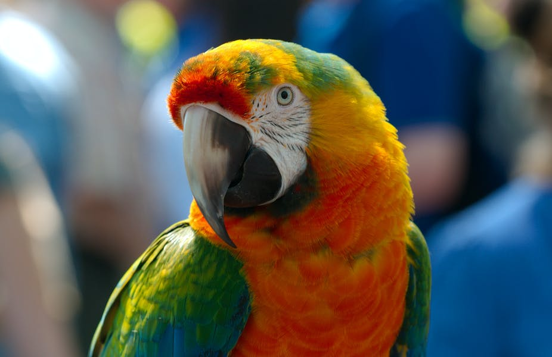

position:relative;
Parrots are an order of birds. Some examples of parrots are cockatoos,
macaws and budgies. Among other things, due to a thick tongue, many parrots
can become good at talking, and they are popular as pets.

Description
The parrots are often wonderfully colored, but many are also solid green.
They have a curved, powerful beak, and the upper beak is articulated towards
the forehead and is extra movable. Two toes facing forward and two backward.
Parrots often get very old in captivity; several species can be about 100 years old.
Prevalence
The parrots are widespread in tropical and subtropical regions. Most species
live in the Australian region up to Southeast Asia, some in Africa and many in
South America, partly up to Central America.
At least two species have established free-living populations in Europe as a
result of releases or escapes from captivity: collar parakeet from Africa /
Asia and monk parakeet, Myiopsitta monachus, from South America.
Karolina parakeet is a well-known example of a bird species that has become
extinct by humans.
Types
The parrots (order parrot birds) include around 350 species, including the
most famous of all cage birds, the budgerigar. Large parrots in cages are
preferably jako or amazon parrots, but can also be macaws, the world's largest
parrots (up to one meter long).
The parrots are today divided into four families.
The parakeet family, Psittaculidae, which is widespread in much of Africa,
Asia and Australia.
The parrot family, Psittacidae, which mainly lives in tropical America and Africa.
The cockatoo family, Cacatuidae, found in Australia, New Guinea and some islands
in Asia.
The Kakapo family, Strigopidae, found only in New Zealand.
The parrot family
The parrot family is a family of birds in the order parrot birds.
They live mainly in tropical America and Africa. In English, the family is
therefore called New World and African Parrots, ie parrots from the New World
and Africa.
The macaws from South America and the jacko from Africa are examples of members
of the parrot family.
Not all birds called parrots belong to the parrot family. Also in the parakeet
family there are many species with a parrot in the name. In addition, parrots are used as a collective term for the parrot birds, which also includes the cockatoo family and the cockatoo family.